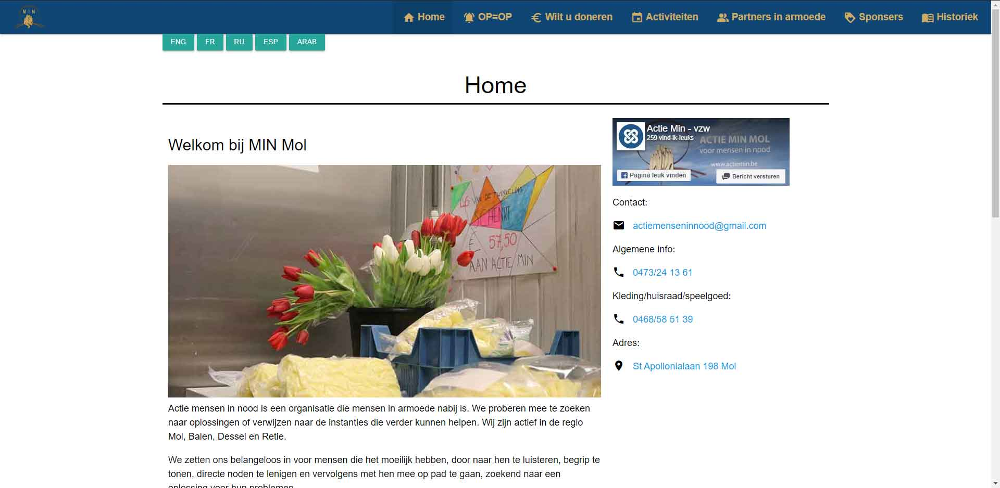
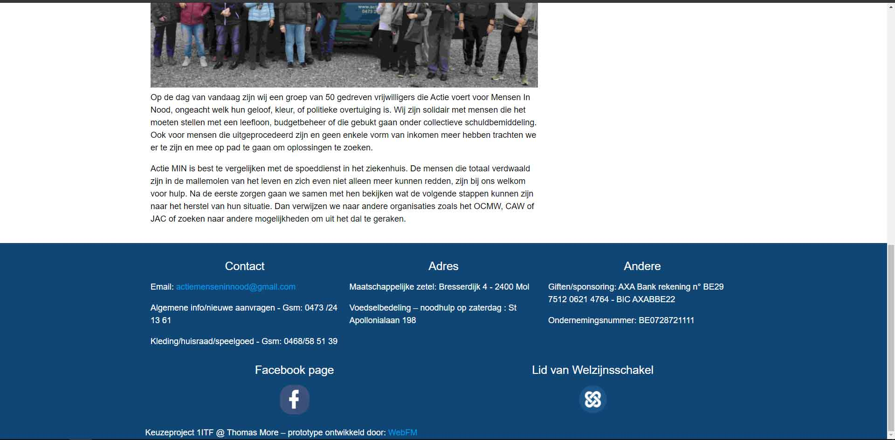

Tijdens het eerste jaar in de ITFactory was er rond de periode van kerstmis een projectweek. Als project van de projectweek mochten we zelf kiezen in welke 'afstudeerrichting' ons project gelegen was. Zo waren er dus 4 projecten die je met je groep mocht maken. Mijn groep en ik kozen voor het maken van een website. Dit project was dan ook eerder gericht naar de Applicatie development richting.
De opdracht was dat de website van de organisatie MIN gingen opfleuren. We kregen een aantal basisvereisten die voldaan moesten worden, maar voor de rest konden we onze gangen gaan. Actie MIN is een organisatie die eten en hulp verleent aan mensen in nood, die het nodig hebben. De website die ze hadden was zeer basic, dus mocht een facelift gebruiken.
We zijn begonnen met een blanke pagina, hier zorgden we eerst voor dat de fundamentele elementen en de vereiste onderdelen aanwezig waren. Daarna hebben we onze creativteit laten gaan en een mooie website gebouwd waar we trots op mochten zijn als net nieuwe eerstejaarsstudenten. Een voorbeeld van een vereist onderdeel was dat er een aantal afbeeldingen zeker weergegeven zouden worden, en dat er bepaalde pagina's met praktische informatie aanwezig moesten zijn. Nog een voorbeeld is dat er een kleine Facebook-Feed op de website gezet kon worden, omdat ze ook veel berichten op Facebook plaatsen.
De website moest geoptimaliseerd worden voor kleinere schermen, dit omdat de realiteit is dat het doelpubliek van MIN eenmaal niet veel geld heeft en dus geen geld om een groter scherm aan te schaffen. Uiteindelijk werd door de organisatoren van MIN zelf besloten welke website er bovenuit kwam. Helaas waren wij niet de gekozen website, maar draait het naar mijn mening niet persee om.
Het keuzeproject was een zeer leuk en leerrijk project, het is perfect om kennis te maken met het bedrijfsleven. Omdat dit het eerste echte project was in het eerste jaar heb ik direct veel bijgeleerd. Kleine vergaderingen bijwonen, communiceren in team, en het werken in het algemeen zijn hier onderdelen van. Ook natuurlijk het werken met de code en het maken van de website.
Ik heb veel soft skills maar ook hard skills geleerd die nog veel van toepassing gaan komen bij andere projecten die ik ooit nog ga maken.
Deze 2 foto's zijn de indexpagina die we gemaakt hadden.
 